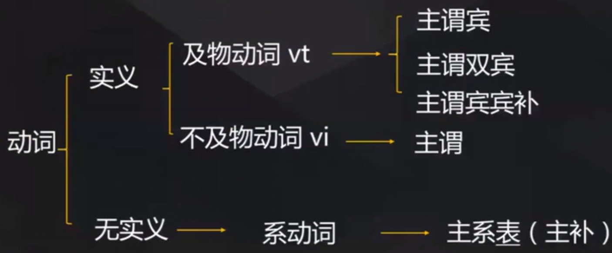

英语语法学习Day12
英语语法
- 英语四级不考纯语法题，但是听译都涉及语法知识。
英语句子分类:
- 主语：黑体字
- 谓语/系动词：下划线
- 宾语/表语：斜体
- 重点关键：
代码格式
简单句
及物动词后必须加宾语。不及物动词后不加宾语或者必须加介词再加宾语。
常见不及物动词
appear rise arise depart flourish happen travel vanish hesitate occur
常见不及物动词与介词的搭配
adhere to amount to believe in belong to consist of depend on end with lead to result in rely on Black lives matter.(主谓)
peer pressure has a positive side.(主谓宾)
A visit to elderly people brings them
great laughter and joy.(主谓双宾)
- 人：直接宾语
- 物：间接宾语
- I bring you a wife.(直接宾语和间接宾语可以互换，但是要加介词：I bring a wife for you.)
The unchecked growth of the tourism may render the environment
seriously polluted.(主谓宾宾补)
- check（检查，抑制，本句话的check意思为抑制）
主谓双宾和主谓宾宾补的区别：
- 宾语和谓语有关。双宾都是和谓语有关系。宾补是个和宾语有关系，谓语也是和宾语有关系。（中间加入be动词：通顺为宾补，不通顺为双宾。）
Mutual trust is not a luxury ，but it is necessary.(主系表)
系动词和谓语动词的区别：
- 无实义动词：系动词
- 实义动词：及物动词/非及物动词
常见系动词：
be动词 am，is，are 感官动词 feel，like，smell，sound，taste 变化 turn，become，go，get，grow 保持 remain，keep，stay 似乎 seem，appear 证明 prove 简单句框架!
简单句练习
Everybody loves a pay rise.（主谓宾）
The down to earth working style won him
respect and honor.（主谓双宾）I bring you a wife.
今天非常热。
翻译：Today‘s weather is very hot.
John killed a rich person.（主谓宾：John杀了一个有钱人） // John died a rich person.（主系表：John被杀时是个有钱人）
She will make him
a good husband.（主谓宾宾补） // She will make hima good wife.（主谓双宾）I mean you
no harm.（主谓双宾：我对你无害）I will make your English
better.（主谓宾宾补）Money can buy you
love.（主谓双宾：钱可以为你买来爱） // Money can buy your love.（主谓宾：钱能买来你的爱）She is smelling the flowers.（主谓宾） // The flowers smell good.（主系表） // Your feet smell.（主谓）
青海湖最深处25.5米。
翻译：The maximum depth of QingHai lake is 25.5 meters。
并列句
- 两个或以上独立分句，通过并列连词连接，各分句主谓完整。
- 各分句意思同样重要，相互独立。主要连词：and，but，or，yet。
- Yet occurrences of shortages and droughts are causing famine and distress
in some areas，andindustrial and agricultural by-products are polluting water supplies.
复合句
- 理解及分类：
- 一个主句和一个或多个从句，主句表达主要意思，从句表达次要意思。
三大从句
名词性从句
主语从句:
- that 引导的主语从句
That the little boy got the first prizemade his family relativesso proud.(主从+谓+宾+宾补)[That **people** <u>often experience</u> trouble sleeping in a different bed in unfamiliar surroundings]is a phenomenon known as the “first-night” effect. (主{主从}+系+表+{后置定语},tips:that物=无成分,无含义,不能省)- whether 引导的主语从句
Whether such taxes workis a matter of debate.(主{主从}+系+表;翻译:是否进行征税是有效果的这件事情上是有争议的.)debate:争议- 特殊疑问词引导的主语从句
How students ultimately handle stressmay depend on their personal test-taking abilities.(主从+谓+宾)- it形式主语的类型
- In today’s job market,
it’s not uncommon for job seekers tosubmit applications for many positions. (position:职位,岗位)It’s commonly knownthat certain diseases are linked with occupations like lung disease in coal miners. （occupation：职业；lung disease：肺部疾病；coal miner：煤矿工人）Itis true thatEnglish is becoming an international language, but it is still neglected by a majority of undergraduates.（neglect：忽视’；undergraduate：本科生）宾语从句：
- 及物动词后的宾语从句
- I have learned that
love, not time, heals all wounds.(heal：治愈；wound：创伤)- 介词后的宾语从句
- Therefore, it is vital that educators everywhere take a careful look
not onlyatwhat is being done,but alsoatwhat should be done in the field of computer education.（{主从+两个宾从}take a careful look at…：仔细看看；格外注意）表语从句：
- There are two worrying features of the slowdown (粮食增速放缓). One is that it has been particularly sharp in the world’s most populous(人口多的) countries, India and China.（sharp：尖锐，陡峭）
同位语从句：
用一句话解释一个抽象名词
There is a popular saying
that family happiness spurs social stability.（spur：马刺，刺激，促进）名词性从句引导词：
名词从句引导词 对应简单句类型 引导词是否做成分 引导词是否可以省略 连词 that 陈述句 不做成分，无实际含义 在不影响句子意思的情 况下，宾语从句的 that 可 以省略 连词 whether\if 一般疑问句 不做成分，有“是否”得含义 不能省去，因为有“是否” 的含义 连接副词 when，where，why，how连接代词 who，whom，what，which，whose以上统称特殊疑问词 特殊疑问句 when，where，why，how在从句中作状语；who，whom what做主语、宾语、表语which和whose作定语，后接名词 不能省去，因为既作“成 分”又有“实际含义” 形容词性从句
定语从句
副词性从句
状语从句